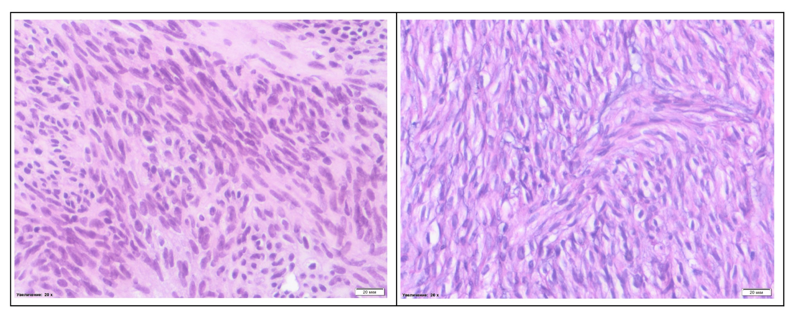

Immunohistochemistry of the liver biopsy
LLC CAPITAL
License of the Ministry
of Health of Ukraine
AG No. 599781
dated January 17, 2012
MEDICAL DOCUMENTATION
Institution code for the All-Ukrainian Classifier of Enterprises and Organizations: 32381903
Universal clinic "Oberig"
3 Zoolohichna Street, Kyiv, 03057, Ukraine
(044) 521-30-03
emergency aid 3003
5213003@oberig.ua
Pathomorphological study of biological material
Patient: Zherlitsyna Anastasia Stanislavivna, 46 y. o.
Stationary card No. 00054
Date: 30.01.2023
Numbers of histological examination Document number: 2023/202
Material for research Paraffin block and histological slide 202/23 - material of a tru-cut biopsy of a liver lesion + 8 slides with IHC staining;
histological slide and paraffin block 48278/22 - tumor biopsy material - lesions in the liver.
(NCI)
A biopsy specimen from a liver lesion 5 cm
Number of containers - 1
Clinical diagnosis sarcoma of the uterus, mts in the liver
Macroscopic description of the drug 2 tumor tissue samples
The material was delivered in a container labeled according to the referral, tissue samples were fixed by full immersion in a 10% buffered formalin solution (pH 7.2, exposure 6-72 hours). Dehydration was performed in a battery of alcohols with the original concentration and fixed in paraffin. Serial sections with a thickness of 3-5 μm were made, the samples were placed on a standard glass slide with subsequent deparaffinization. Staining method: hematoxylin/eosin
Immunohistochemical reactions
Antibodies to Actin Smooth Muscle (Epredia, clone 1A4) - negative reaction
Antibodies to CD56/NCAM-1 (Epredia, clone 123C3) - negative reaction
Document is printed using DocDream MIS
LLC CAPITAL
License of the Ministry
of Health of Ukraine
AG No. 599781
dated January 17, 2012
MEDICAL DOCUMENTATION
Institution code for the All-Ukrainian Classifier of Enterprises and Organizations: 32381903
Universal clinic "Oberig"
3 Zoolohichna Street, Kyiv, 03057, Ukraine
(044) 521-30-03
emergency aid 3003
5213003@oberig.ua
Pathomorphological study of biological material
Patient: Zherlitsyna Anastasia Stanislavivna, 46 y. o.
Stationary card No. 00054
Date: 30.01.2023
Microscopic description of the drug 202/23 - the material is represented by tissue samples from a liver tru-cut biopsy, where the tissue of nodular tumor proliferation is revealed, which is formed by chaotically interwoven fibers of spindle-shaped cells with elongated nuclei, with weakly expressed signs of cytological and nuclear atypia, without signs of increased mitotic activity (status after systemic treatment ). In an immunohistochemical study with aberrant loss of expression of Desmin, Actin Smooth Muscle actin, with preservation of expression of Caldesmon.
48278/22 (NCI) - the material is represented by extremely small fragments of tumor tissue, which is made up of spindle-shaped atypical cells with moderate eosinophilic cytoplasm, one elongated nucleus, polymorphism of cells and nuclei is weakly expressed, tumor cells are mostly atypical monomorphic, available figures of mitotic divisions (5/10 visual fields of high magnification with repeated fields due to the small amount of material in the preparation). The material is not enough for IHC research
Pathomorphological conclusion Morphological image and immunophenotype of tumor cells testify in favor of metastatic leiomyosarcoma of the uterus, status after systemic treatment (taking into account clinical and anamnestic, instrumental data), ICD-O-3 nosological code 8890/6.
Recommendations Consultation of the attending physician with the result of the morphological research.
Note If there is a need to clarify the results of a pathohistological research or if it is necessary to obtain materials (paraffin blocks and histological slides) for consultation in another medical institution ("second opinion"), please contact a pathologist for an appointment by appointment.
Doctor: Kovalova A.V.____________________
Photomicrographs

Document is printed using DocDream MIS